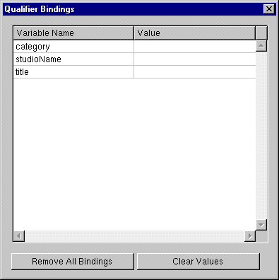

Previous Section
Previous Section
Testing a Fetch Specification
You can test a fetch specification using EOModeler's data browser. Click the fetch specification in the Model Editor's tree view, and then open the Data Browser. EOModeler connects to the database, invokes the fetch specification, and displays the results.If the fetch specification includes qualifier variables, EOModeler displays a Qualifier Bindings panel with which you can supply values to bind to the variables ().

 Table of Contents
Table of Contents  Next Section
Next Section